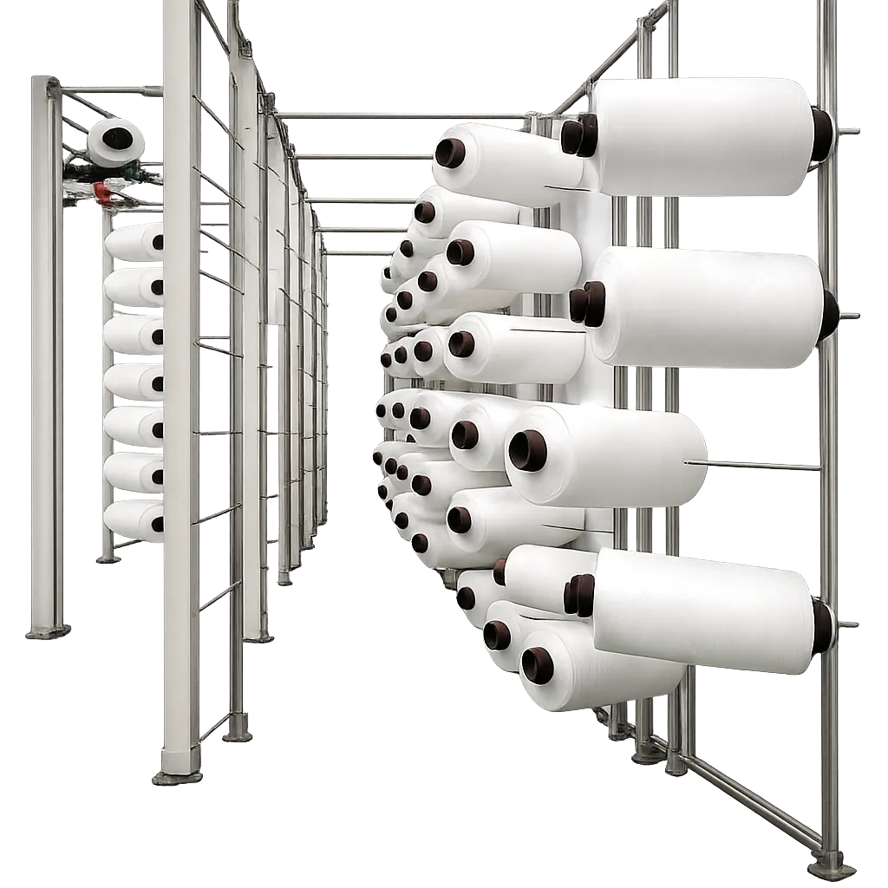
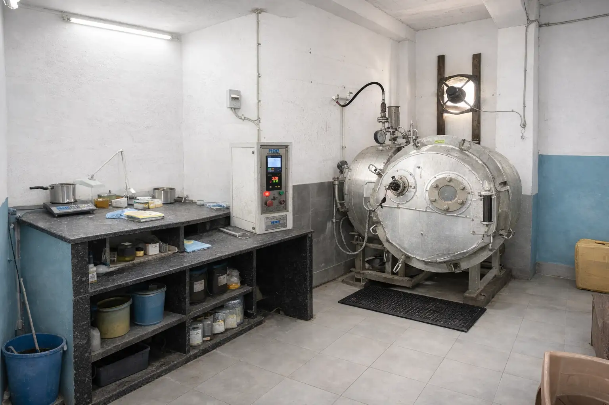
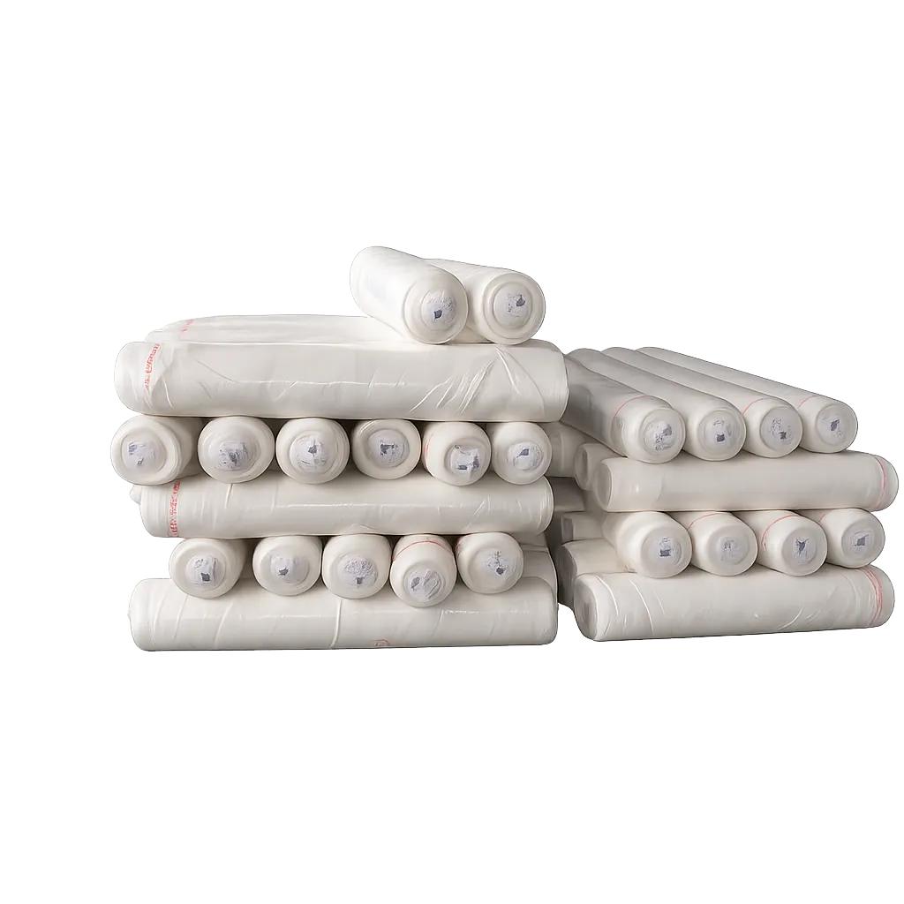

01

Yarn Procurement
Sourcing premium quality yarns from trusted suppliers — because every thread carries a promise from the very beginning.
- 100% Certified Cotton
- Premium Polyester & Blends
- Sustainable, ethical sourcing
02

Knitting
Advanced circular knitting with precision control — 80+ machines operating with the consistency that trust demands.
- State-of-the-art Machinery Park
- Precision Tension Control
- 3 Lac Kg / Month capacity
03

Quality Testing
In-house lab testing for GSM, strength, and shrinkage — because uncompromising quality is our standard.
- GSM consistency
- Strength & shrinkage control
- Zero defect mindset
04

Inspection
100% fabric inspection before dispatch — every roll, every meter, checked with care.
- 100% Visual Inspection
- Advanced defect detection
- Quality Assurance sign-off
05

Packaging & Dispatch
Secure packaging and timely delivery across India — because a promise made is a promise kept.
- Secure, damage-proof packaging
- Timely, trackable dispatch
- Pan-India delivery network